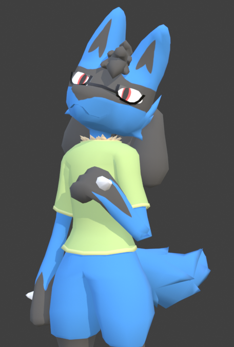
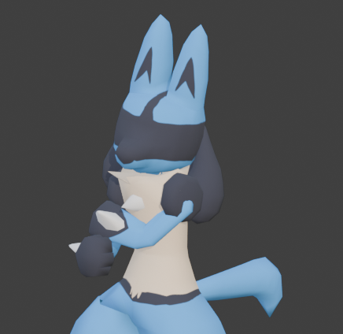
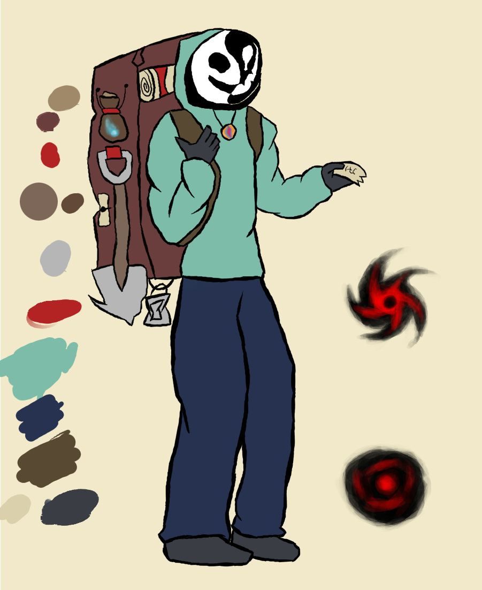
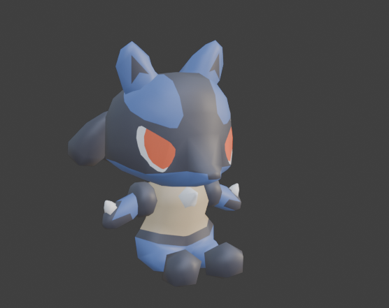

a model fighting game i was working and stopped because i cant focus on anything that takes more then 2-3 days max :)

my main oc, able to reform his body into any thing. so i just am going to say 'i use a lucario as my profial but i am truely this and it is not a excuse to be a lucario, nope, its not like i like lucario thaat much :)'

lucario doing spooky dance :) what more can i say :)
some random shit i made because why not found it and desided to put it here :)
